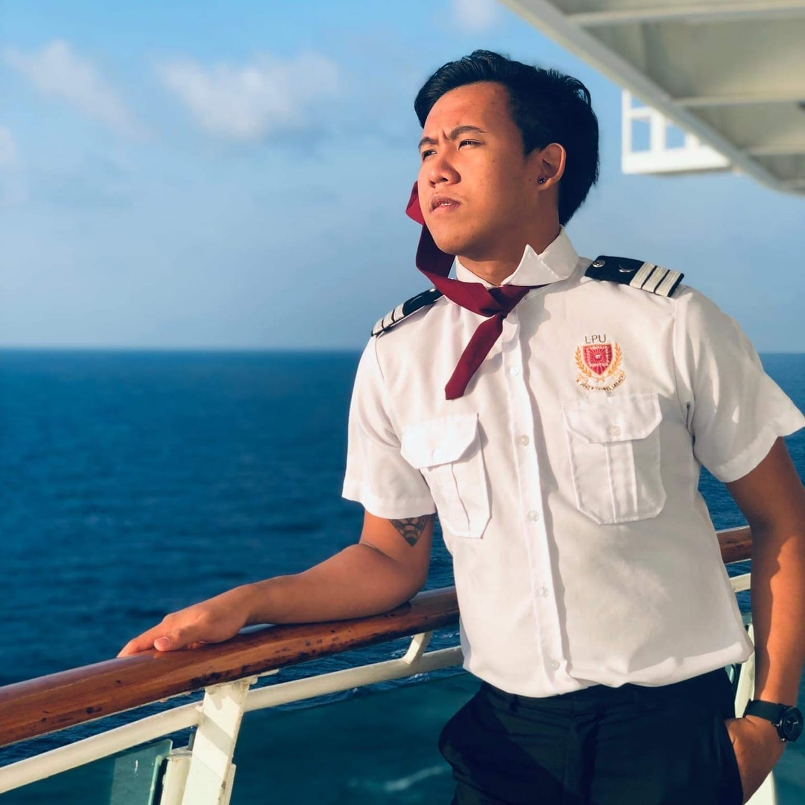

Liam Jarod P. Alcos

Summary
I am a graduate of Hospitality Management which specializes in cruise, so I am a very flexible
person that can work through all of the Hospitality Industry, whether it be in hotels, restaurants, cafes, and etc.
Education
- Laguna College (Junior Highschool 2012-2016)
- Lyceum of the Philippines University - Laguna (Senior Highschool 2016-2018)
- Lyceum of the Philippines University - Laguna Cruiseline Operations in Hospitality Services (2018-2023)
Work Experience
- Concierge in Sheraton Hotel
June 2022 - March 2023
- Tending to guests' needs on their rooms.
- Keeping the guests' items safe and delivered into their rooms.
- Making sure the guests are satisfied while making them feel at home.
- Ensuring that the highest quality of service is provided to the guests.
- Strategic Management.
- Senior Waiter in Mzllah Specialty Cafe and Ida Bistro & Restaurant
February 2025 - Present
- Advanced Coffee knowledge.
- Serving VVVIP Clients.
- Proper Food Handling and Hygiene.
- Staff Management and Handling.
- Attention to details specially when it comes to food.
- Working under pressure.
- Good Decision Making.
Skills
- Customer service: ⭐️⭐️⭐️⭐️⭐️
- Profession Knowledge:⭐️⭐️⭐️⭐️⭐️
- Teamwork: ⭐️⭐️⭐️⭐️⭐️
- Communication Skills: ⭐️⭐️⭐️⭐️⭐️
- Coordination: ⭐️⭐️⭐️⭐️⭐️
Awards and Certifications
- Food and Beverage Certifications
- Basic Training
- American Hospitality Academy (2023)
- Wine Seminar and Tasting
- Simulation Workshop: Revenune Management and Hotel Industry Insight
- Food Safety, Sanitations and Risk.
Others